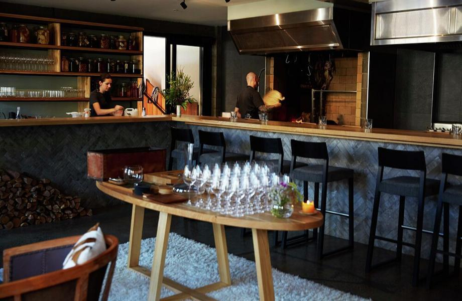
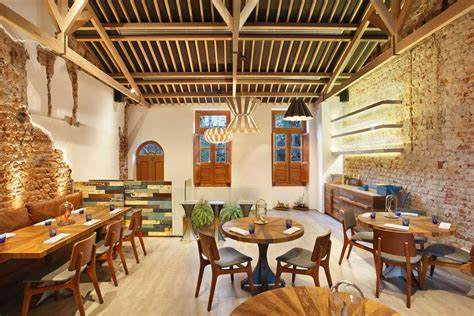
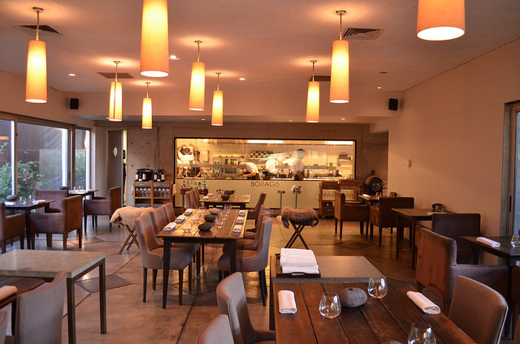
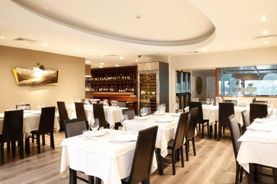

Momofuku Seiobo, Australia

In many ways, Momofuku Seiobo is antithetical to the mission of the WBR list, which is to shine a light on restaurants that express the culture of their locations. This is a slick and darkly moody Caribbean restaurant owned by an American restaurant group, bumping reggae in the back hallway of a hulking casino in Sydney, Australia. But rules are meant to be broken. Chef Paul Carmichael, who is originally from Barbados, approaches the food of his homeland with lyricism, specificity, and an unwavering dedication to deliciousness. Carmichael has worked extensively in Puerto Rico and New York City, and did his senior thesis at the Culinary Institute of America on the food and history of the Caribbean. Cou cou, the unofficial national dish of Barbados, is made here with fresh corn and sterling caviar rather than the traditional cornmeal and flying fish roe, giving it a sweet and salty elegance. If you look closely, Momofuku Seiobo does reveal things about its location, in the riotously beautiful Australian produce used by Carmichael. Intensely flavored sea urchin is sandwiched between impossibly thin, crisp cassava chips. Marron the seasonal Australian freshwater shellfish that's like lobster but better is smothered in a bright sofrito. This is undeniably one of the best restaurants in the world, and Carmichael deserves all the recognition afforded his famous boss and possibly more.
Pasture, New Zealand
On paper, Ed Verner's Auckland restaurant looks and sounds much like any ambitious fine-dining spot. Even the name, Pasture, references ubiquitous and vague agrarian farm to table values. But I was pleasantly surprised at every turn during my late summer meal, which is served at a counter to only 12 guests each evening, six at a time. The playlist sets the mood, veering from Indeep's "Last Night a DJ Saved My Life" to The Cure's "Lullaby" without a hint of incongruity. In front of me, a wood fire blazed in a multi-functional oven, with meat and fish and vegetables hanging near the heat or nestled in the coals. Much of Verner's food straddles the line between sweet and savory: a bracing cool, clear soup made from the husk and silk of corn, served alongside a peach dusted with fennel pollen; a slice of John Dory sashimi wrapped around pickled chamomile that is floral but restrained and utterly lovely. The meal is made up of more than a dozen dishes, most of them tiny and bright, leaving you room to truly enjoy the final savory course: 120-day aged Wagyu that has been cooking in that fiery oven throughout the meal. Served with rhubarb, geranium, and aloe vera, it is easily the best piece of red meat I've eaten this year.
Fleet Restaurant, Australia

This stretch of lush landscape along the northern New South Wales coastline ought to be on any Australian visitor's bucket list. Known as the Northern Rivers area, its unique topography sees a network of tidal rivers that wind through the flats between gorgeous beaches and leafy hinterlands. Byron Bay is the famous anchor town, but the tiny riverside community of Brunswick Heads has transformed in recent years, mainly thanks to Fleet, a slip of a restaurant on the quiet end of the town's commercial district. There are only 14 seats, and they are hard to secure, but do so and you'll be rewarded with everything wonderful about modern Australian dining. The tone is set by co-owner Astrid McCormack, who delivers some of the warmest and most gracious service I've ever experienced. Her partner, co-owner and chef Josh Lewis, executes a tasting menu that makes the best of the region's beautiful produce and seafood, playing with contrasts and textures in ways both thoughtful and ingenious. The vegetal tang of a whole fresh radish is tempered with the sweet nuttiness of a honey-and-sesame-seed coating, as part of a flurry of small snacks to start. Raw oysters are nestled in sheep-milk yogurt and showered with shaved macadamia for a soft, tart, briny mouthful that is pure pleasure. Sweetbreads are turned into the world's creamiest schnitzel, served as a "sanga" between soft rounds of white bread with a generous glurp of anchovy and mustard mayo. Fresh, delicious food; interesting and thoughtful drinks service; truly caring hospitality. These are the things that make eating in Australia wonderful, and Fleet is a glowing embodiment of them all.
Lasai , Brazil
It would be easy to tell you that chef Rafael Costa e Silva uses only ingredients from Rio de Janeiro state for his multi-course tasting menus at Lasai, and that many of those ingredients come from the chef's own gardens. I could wax poetic about the airy modern feel of the town-house dining room and the vaguely Basque inspiration for the cooking. But none of those descriptions really do justice to the feel of this place, its subtle, delicious exuberance. There's a studied vibrancy to everything that hits the table at Lasai, from the brightly flavored fruit-based cocktails to the elegant, architecturally plated dishes served throughout the evening to the diverse and thoughtfully chosen wine pairings. Mini empanadas, their casing dyed magenta and tasting of sweet beets, are stuffed with a luscious cashew filling; local fish is paired with hearts of palm and creamy coconut. Dishes arrive in a colorful whirlwind and leave you giddy. Costa e Silva is a master at contrasts, of hue and flavor and texture�everything tastes bright and vital. Eating there makes you feel bright and vital. What more could you want?
El Chato, Colombia

Nowhere in Colombia expresses the colorful, exuberant personality of that country better than El Chato, a leafy brick-floored restaurant that thrums with good vibes. Friends chatter over a soundtrack of Grace Jones and Talking Heads, a serious cocktail program with a tropical bent adds to the fun, and chef Alvaro Clavijo who has cooked in restaurants in Paris, New York City, Barcelona and Copenhagen delivers food that is approachable yet wildly creative. Crab comes with avocado, cilantro, and funky fermented jicama.Combinations like shiitake mushrooms with pine, honey, and bee pollen taste at once revelatory and exactly right. I had a blast eating here solo, but perhaps more than any other restaurant I visited this year, El Chato cried out for a boisterous group of friends who could share in the revelry.
Borago, Chile
Borago, nestled into the foot of Santiago, Chile's highest mountain, is almost a parody of a high-concept restaurant. The room is huge and modern, with glass walls looking out towards the peak; the glassed-in kitchen is full of serious workers brandishing tweezers, the drinking water is Chile's finest rainwater; and the waiters present each precious plate with hushed veneration. And yet, from the first reverently placed dish perhaps a sweet-tart edible twig dotted with brilliant pink flowers you'll realize that this restaurant is way more joyous than it lets on. Chef Rodolfo Guzman is very focused on the ingredients of Chile and the work of Chilean foragers, and the result is a 16-or-so-course meal that touches on every color and flavor and emotion you could hope to experience in a single evening. Dishes materialize as flowers or spheres, or inside of hollowed-out pumpkins. A ceviche of palometa, a firm, buttery type of amberjack, comes layered with a spackle of violet petals; a mouthful of cool floral pleasure. In other words, Borago is, above all else, serious fun.
Sud, o Passaro Verde Cafe , Brazil

It is possible to arrive on this leafy side street in Rio de Janeiro's Jardim Botanico neighborhood and completely miss Sud, which is located in a house behind a large white wall. There is no way to know you're in the right spot before you've entered what could easily be someone's private property. Many days the only giveaway is the line of people snaking out the gate, waiting for a spot at one of 12 tables. They're here for the heartfelt cooking of Roberta Sudbrack, who owned a highly awarded eponymous fine dining restaurant in Rio from 2005 to 2017. In 2018, Sudbrack opened this far more casual cafe-restaurant, cooking much of the menu in a large wood-fired oven that sits at one end of the cozy dining room. The food has the feel of home cooking, if it were made by your most culinarily talented friend with access to the most beautiful produce imaginable. Okra is smoked, draped in lardo, and dusted with crumbled cornbread. Corn and sausage comes sizzling out of the oven then spooned over a fat lobe of burrata, the cool cheese and the hot ingredients coming together in milky, meaty, crunchy harmony. One of the simplest dishes a pot of rice topped with a variety of perfectly seasoned and fire-roasted vegetables was also one of the most memorable, outdone only by the airy, crispy, burnt-sweetness magic of dessert: Sudbrack's raspberry clafouti, cooked in a cast-iron pan and showered in powdered sugar.
Jacinto, Uruguay
Should you ever be so lucky as to find yourself in Uruguay in the late summer, you'll find a culture in full celebration of its tomato bounty. At Jacinto, that means deep red tomatoes paired with juicy wedges of peach, creamy mozzarella, avocado, pesto, and a smattering of crispy black rice. The impossibly charismatic restaurant, cafe, and bakery sits on a cobblestone street just off Zabala Square in the Old City of Montevideo. Chef Lucia Soria apprenticed with Argentine chef Francis Mallmann, and credits Alice Waters as a huge inspiration. Both influences as well as the Italian inflections common in Uruguay thanks to an influx of Italian immigration in the 19th century can be seen in the approachable seasonal menu, which is served with aplomb by Jacinto's friendly team in a room with high ceilings, fresh flower' and checkered floors. This is casual food as it should be: pork Milanese with an invigorating carrot salad, crushed sweet potatoes, and pickled onion; sweetbreads with burnt lemon; a kids' menu that treats little ones like grown-ups , with rib eye or a fish of the day and a dessert of fresh fruit and tomato. The combination of Jacinto's many charms makes it remarkable; I'd happily eat there for three or four meals a day and never get bored.
Cocina Chontal, Mexico

It was one of those pinch-me moments: Sitting in the middle of the San Isidro de Comalcalco jungle in Tabasco, Mexico, in a dining room with brick floors and wooden tables, the campfire smell of a wood-fueled comal just outside the door. An adorable teenage couple at another table giggled and fed one another as a neighborhood dog stood at the door hoping for scraps. The light was golden and magical and I asked myself, How did I get here? Cocina Chontal is on the outskirts of the Zona Arqueologica de Comalcalco, a Chontal Mayan site containing the remains of the westernmost city of the Mayan civilization. Chef Nelly Cordova Morillo is a former lawyer who grew up eating traditional Chontal cooking on her grandparents' farm. Her restaurant celebrates the pre-Hispanic cuisine of the region, serving traditional dishes made with traditional ingredients cooked over wood harvested from the surrounding landscape. This means "tortilla Chontal," a type of fresh-masa quesadilla served with a dark green salsa that tastes of the forest, alongside frothy pineapple agua fresca. Dark, complex mole poblano smothers moist turkey and comes scattered with sesame seeds. Scarlet shrimp are piled atop a base of warm masa, fresh and vibrant and stupefying in their deliciousness. I spent multiple days and flights and car rides getting to this one meal, and I'd do it all again in a heartbeat.
Orlando's, Saint Lucia

"Welcome to Orlando's! I'm Orlando." This, along with a fist-bump, is the way your meal at Orlando's is likely to start, with chef-owner Orlando Satchell welcoming you to his domain as if it were his home. Tucked into the hillside amongst the riotously colorful rooftops of Soufriere is a restaurant that beautifully expresses the spirit of St. Lucia and makes full use of the tropical produce and foodways of the Caribbean. It's obvious that Satchell comes from the luxury-hospitality world he worked in London hotels and then at Soufriere's Ladera Resort before opening Orlando's in 2012, and his plating is reminiscent of the upscale wedding food of the '80s in a really fun way! But his flavors are anything but retro. Soup made with local breadfruit and smoked fish is blended with coconut milk for a creamy, silky finish. Needlefish is battered and fried and served over a salsa made from sweet potato. Satchell's dishes almost all have an element of sweetness, the tang of acid, and something hearty to ground the other elements. The brightly hued room is usually full of large family groups, taking advantage of the set menu and the endless hospitality of Satchell and his staff.